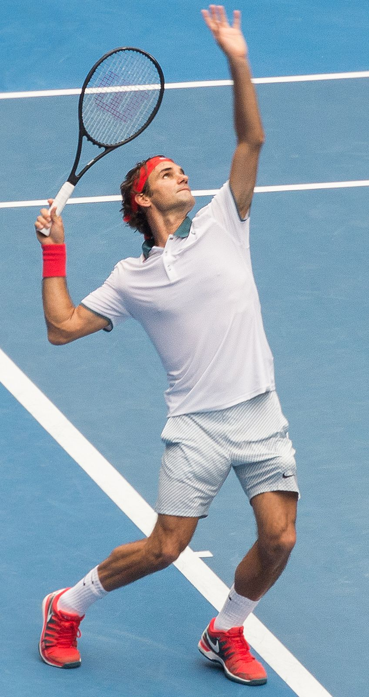

This website serves as a tribute and informative source to celebrate the life and career of Roger Federer, one of the greatest tennis players the world has ever seen. My goal is to portray an engaging and informative journey of his career and life.
Image: "The Federer Technique" by Peter Myers at the Australian Open, at https://commons.wikimedia.org/wiki/File:The_Federer_Technique_-_Oz_Open_2014.jpg, C.C BY 2.0
This site is for tennis fans, aspiring players, and anyone curious about the career and life of Roger Federer. You can use it to remember his career, find information, and get inspired.
Federer is also known for his charity work. You can learn more about the Roger Federer Foundation on their official website.